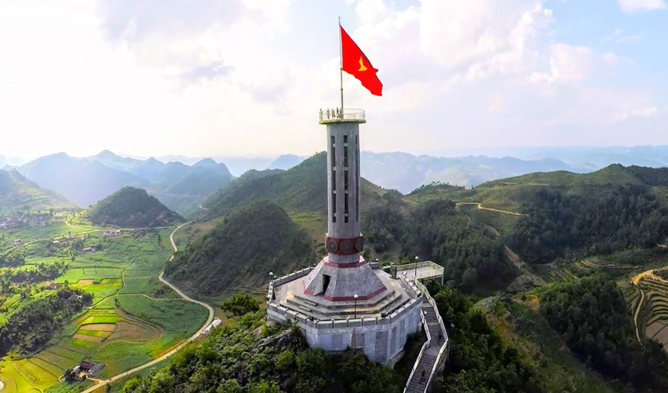
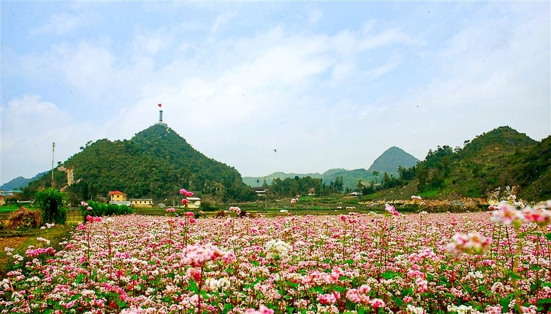
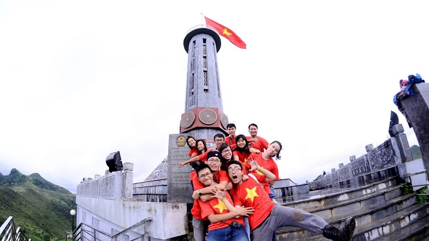

CỘT CỜ LŨNG CÚ – LỰA CHỌN ĐẶC BIỆT KHI DU LỊCH HÀ GIANG
Cột Cờ Lũng Cú luôn là sự lựa chọn cực kỳ hấp dẫn cho chuyến đi du lịch Hà Giang của mọi du khách. Đây được coi như dấu thiêng liêng của Tổ Quốc nên luôn khiến khách du lịch tour Hà Giang khao khát tìm đến. Hãy cùng theo dõi bài viết này để thấy rằng cột cờ Lũng Cú đặc biệt thế nào nhé!
Vị trí cột cờ Lũng Cú Hà Giang
Cột cờ Lũng Cú nằm trên đỉnh núi Rồng Long, có độ cao 1.470m so với mực nước biển. Địa điểm thuộc xã Lũng Cú của huyện Đồng Văn, tỉnh Hà Giang. Theo quốc lộ 4C ngược lên Đông Bắc chừng 160km, du khách đến với xã Đồng Văn, huyện Đồng Văn. Tiếp theo, xuôi con đường trải nhựa nối liền Đồng Văn – Lũng Cú, khách du lịch tour Hà Giang từ Hà Nội sẽ đặt chân đến đỉnh Lũng Cú.
LỊCH SỬ DỰNG CỜ
Cột cờ Lũng Cú được xây dựng đầu tiên từ thời Lý Thường Kiệt và ban đầu chỉ làm bằng
cây sa mộc. Cột được xây dựng lại từ thời Pháp thuộc, năm 1887. Những năm sau đó như 1992, 2000
và đặc biệt năm 2002 cột cờ tiếp tục được trùng tu hoặc xây dựng lại nhiều lần với kích thước,
quy mô lớn dần theo thời gian, trong đó năm 2002 cột cờ được dựng với độ cao khoảng 20m, chân và
bệ cột có hình lục lăng và dưới chân cột là 6 phù điêu họa tiết bề mặt trống đồng Đông Sơn. Trên
đỉnh cột là cán cờ cao 9m cắm quốc kỳ Việt Nam có chiều dài 9m, chiều rộng 6m và tổng diện tích
rộng 54m², tượng trưng cho 54 dân tộc cùng chung sống trên đất nước Việt Nam.
Được sự đồng ý của Thủ tướng Chính phủ, Ủy ban nhân dân tỉnh Hà Giang đã có văn bản chỉ đạo UBND huyện Đồng Văn tiến hành tháo dỡ cột cờ Lũng Cú cũ và tiến hành trùng tu, tôn tạo và xây dựng mới. Theo thiết kế cột cờ mới được xây dựng với chiều cao 33,15m (hơn cột cờ cũ 10m) trong đó phần chân cột cao 20,25m, đường kính ngoài thân cột rộng 3,8m. Kiểu dáng bát giác của cột cờ khá gần với kiểu chân cột cờ Hà Nội. Chân, bệ cột cờ có 8 mặt phù điêu bằng đá xanh mô phỏng hoa văn mặt của trống đồng Đông Sơn và những họa tiết minh họa các giai đoạn qua từng thời kỳ lịch sử của đất nước, cũng như con người, tập quán của các dân tộc ở Hà Giang. Thân cột cờ có cầu thang bộ đi lên đỉnh. Trên đỉnh cột là quốc kỳ Việt Nam với cán cờ cao 12,9m và lá cờ, cũng tương tự như những lá cờ sử dụng trước đó, có diện tích 54m².
Đường lên Cột cờ Quốc gia Lũng Cú được xây dựng với tổng số 839 bậc thang, chia làm 3
chặng. Giữa các chặng có nhà chờ để khách du lịch dừng chân nghỉ ngơi ngắm cảnh. Và di chuyển
hết chặng đường đó du khách sẽ được trải nghiệm những điều hết sức đặc biệt. Nhìn từ phía dưới
lên, cột cờ Lũng Cú sừng sững trên đỉnh núi cao, lá cờ sao vàng tung bay trong gió.
Trên con đường chinh phục những bậc đá du khách còn có thể ngắm nhìn những tuyệt tác của thiên nhiên tạo nên trên cao nguyên đá Đồng Văn hay ngắm nhìn vẻ đẹp đơn sơ, bình dị của những bản làng từ phía xa. Mỗi bước đi trên bậc thang dẫn lên đỉnh cột cờ, du khách tour du lịch Hà Giang sẽ có thể trải nghiệm cảm xúc khác nhau. Bước chân lên càng cao thì Hà Giang xuất hiện ngày càng huyền ảo. Cầu thang xoắn ốc 140 bậc có lối đi hẹp và ánh sáng vừa đủ sẽ dẫn lên cao. Cảm giác đứng trên điểm cao nhất của cực Bắc, tự tay chạm vào lá cờ thiêng liêng quả là tuyệt vời. Đến đây vào tháng 9 đến tháng 12 du khách còn có cơ hội được ngắm nhìn những màu sắc mà không nơi nào có. Từ trên đỉnh cột cờ sẽ thấy những thửa ruộng bậc thang với màu vàng rực của lúa chín hay màu hồng phớt của hoa tam giác mạch. Những màu sắc sẽ giúp cho chuyến trải nghiệm của du khách thêm thú vị hơn.
Khi đã lên đến đỉnh cột cờ, ngắm nhìn lá cờ đang tung bay trong gió và toàn bộ cảnh Hà Giang bên dưới mỗi người sẽ thấy được lòng tự hào dân tộc và những cảm xúc khác biệt trong tâm hồn.
@ Nguồn: kynghidongduong.vn